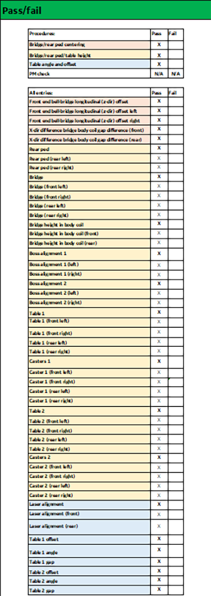

- 00000018WIA30616950GYZ
- id_20257431.1
- Apr 14, 2020 10:04:58 AM
Doing the pass/fail check
Procedure
Check the macro tool for any alignment failures shown in the Pass/fail check.
Figure 1. Sample pass/fail table values in the macro tool
